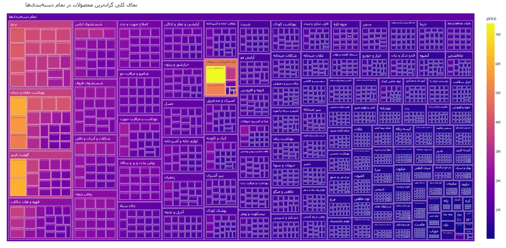

من موقع خرید کردن خیلی مرتبکردن بر اساس قیمت رو دوست دارم. یعنی حتی از سوپرمارکت بخوام پفک هم بخرم، از گرانترین به ارزانترین مرتب میکنم و بعد داخل لیست میآم پایین و طبق اون بودجهای که میخوام خرج کنم یه چیزی رو انتخاب میکنم.
بعد برام سؤال شد که گرونترین محصول هر دستهبندی در کل سوپرمارکتهای اسنپ تهران چیه؟
اول دیتا رو جمع کردم و بعد آنومالیهای قیمت رو حذف کردم — چون قیمت بعضی محصولات اشتباه درج شده بود. مثلاً سرکه چرا باید ۶۸ میلیون تومن باشه؟ — و بعد این نمودار رو رسم کردم:

تنها نکتهای که به نظرم میرسه اینه که بعضی سوپرمارکتها بعضی محصولات رو خیلی بیشتر از قیمتی که هست به مشتری فرو میکنن. آنومالی قیمت نیستا؛ مثلاً یه محصولی ۸۰۰ تومنه، میفروشه ۱۵۰۰.
این کار را اول در کانال تلگرام گذاشتم؛ این نوشته همان است، کمی کاملتر.
nb.neighbours()
| title | date | |
|---|---|---|
| prev | ارزانترین و گرانترین کالای دیجیکالا، هر ۱۲ ساعت | ۱۴۰۴/۰۲ |
| next | سادهترین فیلتر اسپمی که تا حالا نوشتهام | ۱۴۰۴/۰۷ |